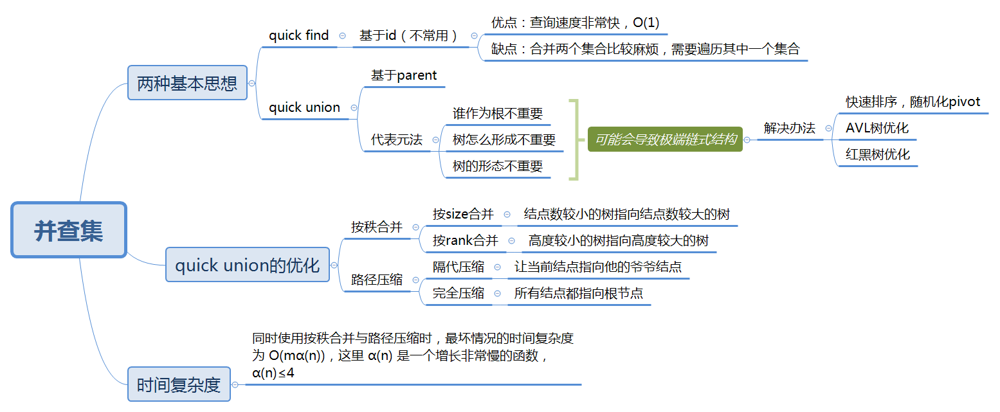

并查集
本文最后更新于：6 months ago
并查集（Union-Find）
思维导图

C++模板
重点是find函数吧，一般情况下将union啥的可以嵌入到具体的实现中加以判断
class UnionFindSet{
private:
vector<int> f; //表示第i个节点的父节点
public:
UnionFindSet(int size){
f.resize(size);
for(int i=0; i<size;i ++){
f[i] = i;
}
}
int find(int k){
if(f[k] == k)return k;
return f[k] = find(f[k]);
}//寻找到根节点
//在寻找的过程中，把经过的人的父节点也变为根节点
void union(int x, int y){
int fx = find(x);
int fy = find(y);
if(fx != fy){
f[fy] = fx; //合并子集
}
}
bool isinoneset(int x, int y){
return find(x) == find(y);
}
};理解了之后，可以再简化一些：
vector<int> f;
int find(int x){
if(f[x] == x)return x;
return f[x] = find(f[x]);
}
void uni(int x, int y){
f[find(y)] = find(x);
}
void init(int n){
f.resize(n);
for(int i = 0; i < n; i ++)f[i] = i;
}已解决问题
下面的中等题，思路都是非常类似的，一个套路。比较有价值的也就情侣牵手这道困难题。
较有趣的题：情侣牵手
题目描述
N对情侣坐在连续排列的2N个座位上，想要牵到对方的手。 计算最少交换座位的次数，以便每对情侣可以并肩坐在一起。 一次交换可选择任意两人，让他们站起来交换座位。
人和座位用 0 到 2N-1 的整数表示，情侣们按顺序编号，第一对是 (0, 1)，第二对是(2, 3)，以此类推，最后一对是 (2N-2, 2N-1)。
这些情侣的初始座位 row[i] 是由最初始坐在第 i 个座位上的人决定的。
示例 1:
输入: row = [0, 2, 1, 3]
输出: 1
解释: 我们只需要交换row[1]和row[2]的位置即可。示例 2:
输入: row = [3, 2, 0, 1]
输出: 0
解释: 无需交换座位，所有的情侣都已经可以手牵手了。说明:
len(row)是偶数且数值在 [4, 60]范围内。
可以保证row是序列 0...len(row)-1 的一个全排列。
算法思路
一开始想到的是：“是不是把两个情侣看作一个连通分量呢？那这样，为什么会用到并查集呢？”
事实上，这里的连通分量是相互错开的情侣。下面具体来说一下。
我们把每一组配对的情侣看作是一个单元，使用i/2作为他们的共同编号：
- 假设两组情侣相互交错开了，他们两组之间形成了一个环，那么需要交换1次；
- 假设三组情侣相互交错开了，他们三组之间形成了一个环，那么需要交换2次；
- 假设四组情侣相互交错开了，他们四组之间形成了一个环，那么需要交换3次；
- …
把每一个环看作一个连通分量。所以，我们只需要计算情侣之间形成了多少个环，即有多少个集合。
从头到尾遍历一遍，如果相邻而坐的两个人不是情侣，那么这两个情侣组就处于同一个连通分量中，使用union将他们合并。
代码实现
class Solution {
vector<int> f;
int find(int x){
if(x == f[x])return x;
return f[x] = find(f[x]);
}
void uni(int x, int y){
f[find(x)] = find(y);
}
public:
int minSwapsCouples(vector<int>& row) {
int n = row.size();
int m = n/2;
f.resize(m);
for(int i = 0; i < m; i ++)f[i] = i;
for (int i = 0; i < n; i += 2)uni(row[i] / 2, row[i + 1] / 2);
int cnt = 0;
for (int i = 0; i < m; i++) {
if (i == find(i)) cnt++;
}
return m - cnt;
}
};参考资料
[1] https://leetcode-cn.com/leetbook/read/disjoint-set/ovuxje/
本博客所有文章除特别声明外，均采用 CC BY-SA 4.0 协议 ，转载请注明出处！